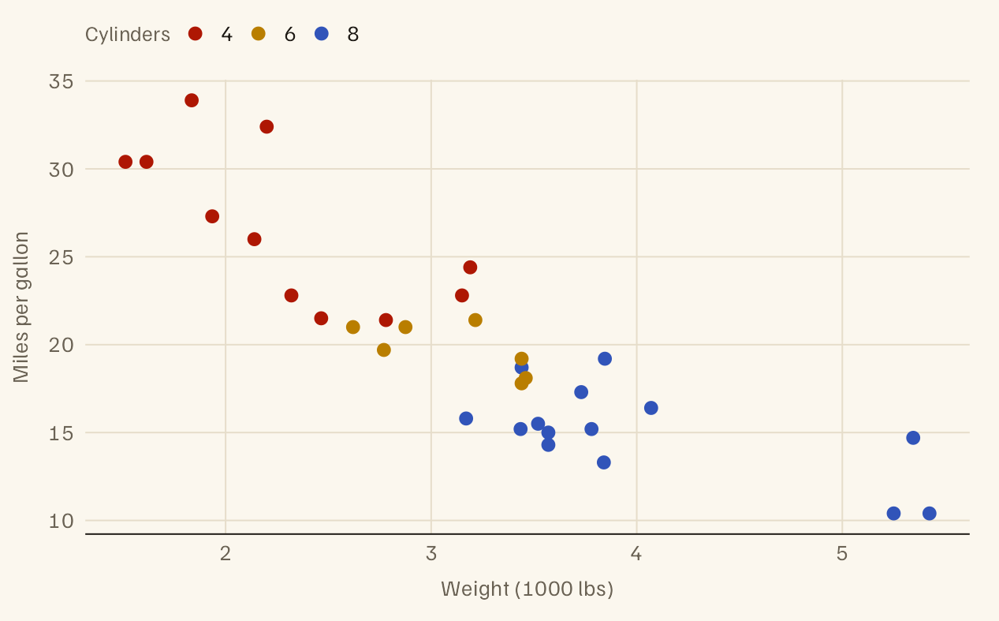
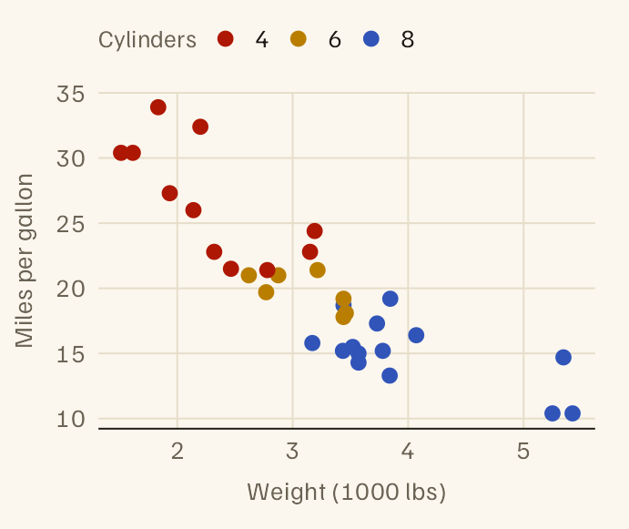
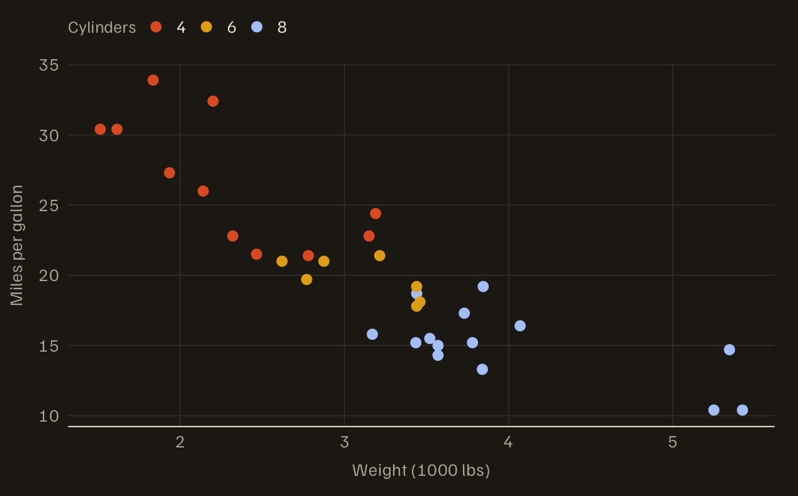
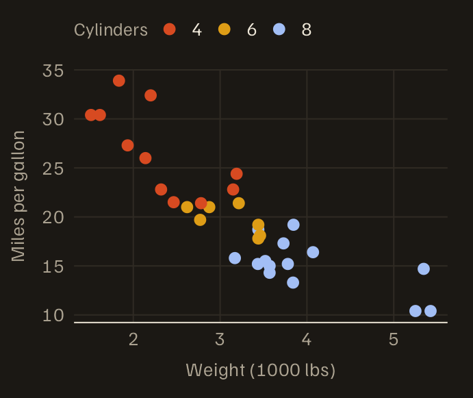

Getting started
One line of YAML for a vignette, one line of YAML for a site
Source:vignettes/getting-started.Rmd
getting-started.Rmdalbersdown themes the two places R package documentation lives: CRAN vignettes and pkgdown sites. This vignette is itself rendered with the format it describes.
A vignette
Set the output format in the vignette’s YAML header:
output:
albersdown::albers_vignette:
family: red # red, lapis, ochre, teal, green, violet
preset: homage # homage (warm, serif) or interaction (cool, grotesk)and declare the packages the vignette needs in
DESCRIPTION:
Suggests:
albersdown (>= 2.1.0),
knitr,
rmarkdown
VignetteBuilder: knitrNothing is copied into vignettes/. The stylesheet, the
fonts for the chosen direction and a small page script are embedded in
the rendered HTML, so the vignette makes no network requests (the kind
of vignette CRAN expects).
albers_vignette() is new in albersdown 2.1.0, hence the
version bound. If a vignette build fails with
'albers_vignette' is not an exported object from 'namespace:albersdown',
the albersdown being used is 2.0.0 or older (R does not enforce
Suggests versions when building): update it with
install.packages("albersdown").
Tip. For an existing package,
use_albersdown(".", family = "teal") switches its
html_vignette vignettes to the format and updates
DESCRIPTION (with the version bound; Remotes
too if the installed albersdown is a development version) and
_pkgdown.yml for you; add dry_run = TRUE to
see the changes first. It also migrates a package set up by albersdown
2.0.
Code and output
Output sits in its own block under the code that produced it, and warnings and errors are marked:
x <- c(4.2, 5.1, 6.3, 5.8)
summary(x)
#> Min. 1st Qu. Median Mean 3rd Qu. Max.
#> 4.200 4.875 5.450 5.350 5.925 6.300
as.integer("seven")
#> Warning: NAs introduced by coercion
#> [1] NAThe copy button on each block copies the code without its output.
Figures
While the vignette renders, theme_albers() is the
ggplot2 theme and the albersdown scales follow the vignette’s family, so
no family argument is needed:
ggplot(mtcars, aes(wt, mpg, colour = factor(cyl))) +
geom_point(size = 2.4) +
albersdown::scale_color_albers() +
labs(x = "Weight (1000 lbs)", y = "Miles per gallon", colour = "Cylinders")

Heavier cars travel fewer miles per gallon.


Each ggplot that a chunk prints automatically is also rendered for
the dark theme, and readers in dark mode see that version. Set
dark_figures = FALSE in the format options to skip it.
Base-graphics plots take the page’s colours but have no dark version,
nor do plots in chunks with fig.show = "hold",
"animate" or "hide".
Tables
knitr::kable(
aggregate(cbind(mpg, hp) ~ cyl, data = mtcars, FUN = mean),
digits = 1,
caption = "Mean fuel efficiency and power by cylinder count."
)| cyl | mpg | hp |
|---|---|---|
| 4 | 26.7 | 82.6 |
| 6 | 19.7 | 122.3 |
| 8 | 15.1 | 209.2 |
Tables too wide for the text column can use the margin on large
screens: wrap the chunk in a ::: {.wide} block.
A pkgdown site
In _pkgdown.yml:
and Config/Needs/website: bbuchsbaum/albersdown in
DESCRIPTION. R CMD check reads neither, so a CRAN package
can theme its site this way without changing its vignettes or
dependencies; use_albersdown(".", apply_to = "new") sets it
up. Building the site needs albersdown 2.1.0 or later
(Config/Needs/website makes a pkgdown CI workflow install
it from GitHub); with albersdown 2.0.0, pkgdown builds a plain Bootstrap
site without an error. Articles written with
albers_vignette() keep their own family and direction on
the site.